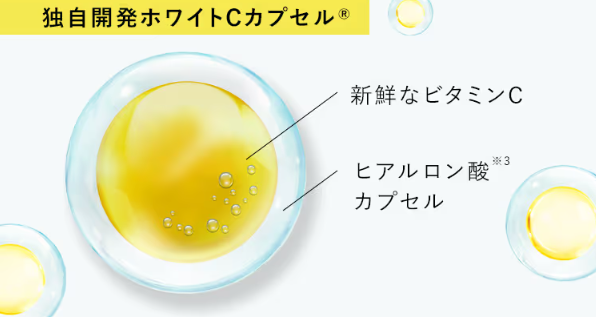
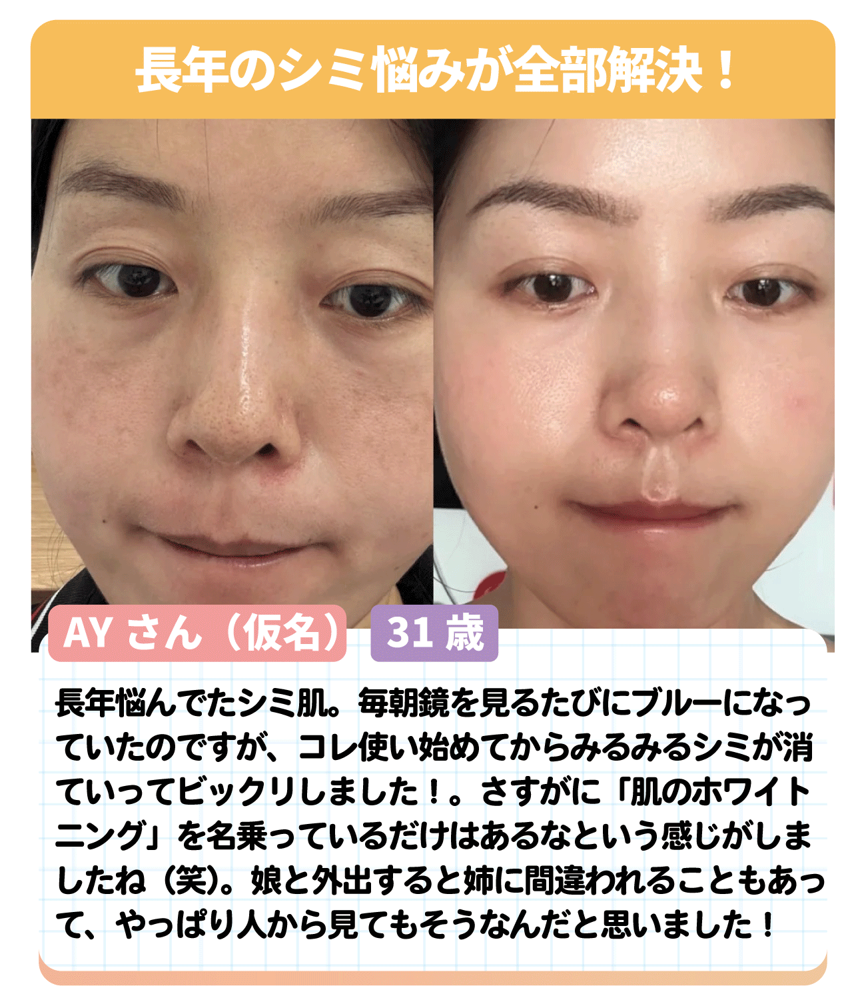
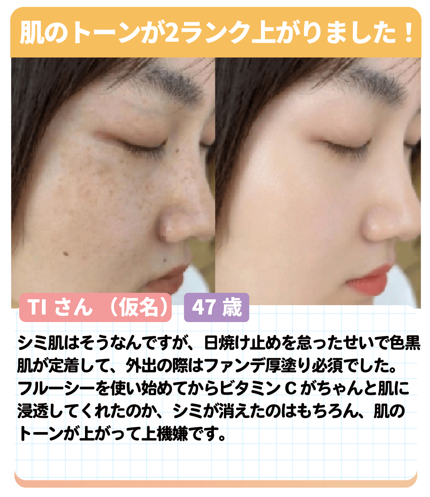

実は最近、
こっそり美肌になる人続出中
なのをご存じですか？
この美肌の秘訣
それは
\通常なら壊れやすい/
ビタミンCを
肌の奥底にダイレクトに塗り込んで
シミの原因を直接取り除いてる
からだと密に話題に
SNSでも
「韓国人の秘密のノウハウ」
と大絶賛！
どんな化粧品を使っても
シミだらけ
だった私の肌が
嘘でしょ?!
まるで剥きたての卵のような白肌に！
実はこれ
世界的化粧品メーカーが開発し
LDKで5冠達成
楽天でも3冠を達成した
シミに効くけど
壊れやすいビタミンCを
カプセルに無菌密封！

壊れやすいビタミンCを
空気に触れさせないことで
肌の奥底までダイレクトに浸透させる!
だから！
肌のホワイトニングとして
皮膚科医も真剣に注目
してるんです
実際に使った人からも
大絶賛

